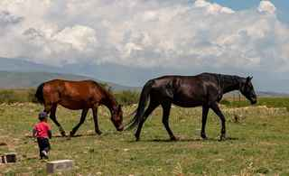

ABOUT US
|
Our history
Akyel Equine Logistics & Breeding Syndicate is established in 1995 in Talas by group of horse breeders, zootechnicians and businessmen of Irad. In the Soviet time the Akyel horse was almost lost. Collectivization and crossing with Thoroughbreds left very few horses of pure type. Only the specialists of the Chong-Talas Stud Farm kept the old lines through all difficult years. After the independence of 1992 our breeders started the hard work of restoration of the breed from these lines, and the Syndicate was created to give this work the international level. Our mission
The Syndicate unites more than 40 specialists: zootechnicians with 30 years of experience, veterinary doctors, grooms, riders, logistics managers. Our stud farms are in the Talas valley and in the Chu valley.
Our partners We work in close cooperation with the National Equestrian Sports Directorate and the Talas Veterinary Research Center. Blood tests for parentage are made in the laboratory of the Center.
 Our horses on the mountain pasture |